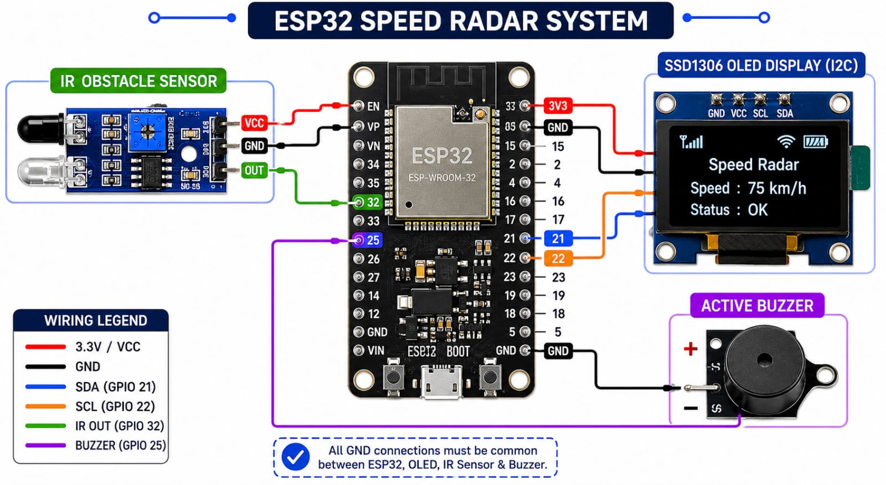
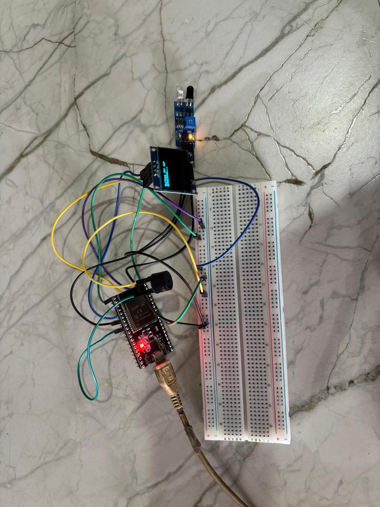
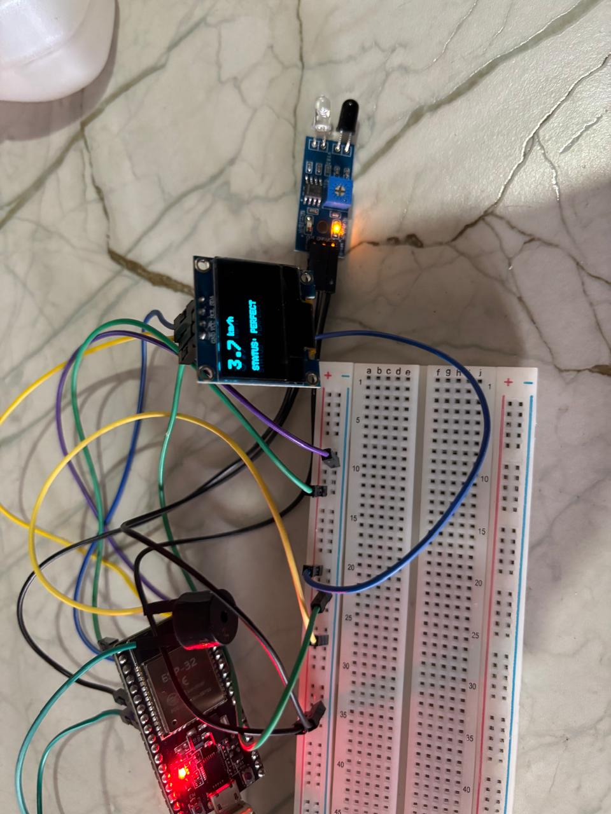

Project Overview
The Smart Speed Radar System is an interactive, IoT-ready project designed to measure the speed of toy cars or small objects in real-time. By utilizing the processing power of the ESP32 and an infrared proximity sensor, this device calculates velocity and provides instant visual and auditory feedback. It is an excellent project for students and hobbyists looking to learn about timing, sensors, and real-time data visualization.
How It WorksThe project operates on a simple yet effective principle of physics: $Speed = \frac{Distance}{Time}$.Detection: As the toy car passes the IR sensor, the sensor detects the reflection of infrared light off the car's surface.Timing: The ESP32 captures the exact moment the car enters and leaves the sensor's field of view, calculating the duration of travel.Calculation: Using the known length of the car (in centimeters), the system calculates the speed and converts it into a more readable format, km/h.Feedback: The result is displayed on an SSD1306 OLED screen, while an integrated buzzer provides immediate status updates:Too Slow (< 3 km/h): A long, low-frequency warning.Perfect (3–7 km/h): Two quick, cheerful "chirps."Too Fast (> 7 km/h): A rapid, frantic alarm.
Hardware Architecture
- Microcontroller: ESP 32S Node MCU
- Sensing Components: Voltage and Current Sensor
- Visual Output: 16x2 I2C LCD Display
- Connectivity: connecting wire (jumper wires)ESP32s
Arduino Code
#include
#include
#include
#define SCREEN_WIDTH 128
#define SCREEN_HEIGHT 64
#define OLED_RESET -1
Adafruit_SSD1306 display(SCREEN_WIDTH, SCREEN_HEIGHT, &Wire, OLE
D_RESET);
const int irSensorPin = 32;
const int buzzerPin = 25;
const float carLengthCm = 15.0;
// --- UPDATED LIMITS ---
const float MAX_SPEED_KMH = 7.0; // Above 7 is FAST
const float MIN_SPEED_KMH = 3.0; // Below 3 is SLOW
unsigned long startTime = 0;
unsigned long endTime = 0;
unsigned long displayTimer = 0;
bool isMeasuring = false;
int lastSensorState = HIGH;
void beepTooFast();
void beepTooSlow();
void beepPerfect();
void calculateAndDisplaySpeed();
void setup() {
Serial.begin(115200);
pinMode(irSensorPin, INPUT);
pinMode(buzzerPin, OUTPUT);
digitalWrite(buzzerPin, LOW);
if(!display.begin(SSD1306_SWITCHCAPVCC, 0x3C)) { for(;;); }
display.clearDisplay();
display.setTextSize(1);
display.setTextColor(SSD1306_WHITE);
display.setCursor(0, 10);
display.println("Speed Radar");
display.display();
delay(2000);
display.clearDisplay();
display.setCursor(0, 0);
display.println("Waiting for car");
display.println("detection...");
display.display();
}
void loop() {
int currentSensorState = digitalRead(irSensorPin);
if (lastSensorState == HIGH && currentSensorState == LOW) {
startTime = millis();
isMeasuring = true;
}
else if (lastSensorState == LOW && currentSensorState == HIGH) {
if (isMeasuring) {
endTime = millis();
isMeasuring = false;
calculateAndDisplaySpeed();
displayTimer = millis();
}
}
if (displayTimer > 0 && (millis() - displayTimer > 3000)) {
display.clearDisplay();
display.setCursor(0, 0);
display.println("Waiting for car");
display.println("detection...");
display.display();
displayTimer = 0;
}
lastSensorState = currentSensorState;
}
void calculateAndDisplaySpeed() {
float timeTakenSec = (endTime - startTime) / 1000.0;
if (timeTakenSec <= 0.005) return;
float speedKmh = (carLengthCm / timeTakenSec) * 0.036;
display.clearDisplay();
display.setTextSize(2);
display.setCursor(0, 0);
display.print(speedKmh, 1);
display.setTextSize(1);
display.print(" km/h");
display.setCursor(0, 30);
if (speedKmh > MAX_SPEED_KMH) { display.print("STATUS: TOO FAST!");
beepTooFast(); }
else if (speedKmh < MIN_SPEED_KMH) { display.print("STATUS: TOO SLO
W!"); beepTooSlow(); }
else { display.print("STATUS: PERFECT"); beepPerfect(); }
display.display();
}
void beepTooFast() {
for (int i = 0; i < 4; i++) {
digitalWrite(buzzerPin, HIGH); delay(80);
digitalWrite(buzzerPin, LOW); delay(80);
}
}
void beepTooSlow() {
digitalWrite(buzzerPin, HIGH); delay(800);
digitalWrite(buzzerPin, LOW);
}
void beepPerfect() {
for (int i = 0; i < 2; i++) {
digitalWrite(buzzerPin, HIGH); delay(100);
digitalWrite(buzzerPin, LOW); delay(100);
}
}
TechGuru99 2 days ago
Great project! Does this work with the ESP32 as well?
MakerJoe 1 day ago
Yes, just change the pin definitions and use 3.3V logic.